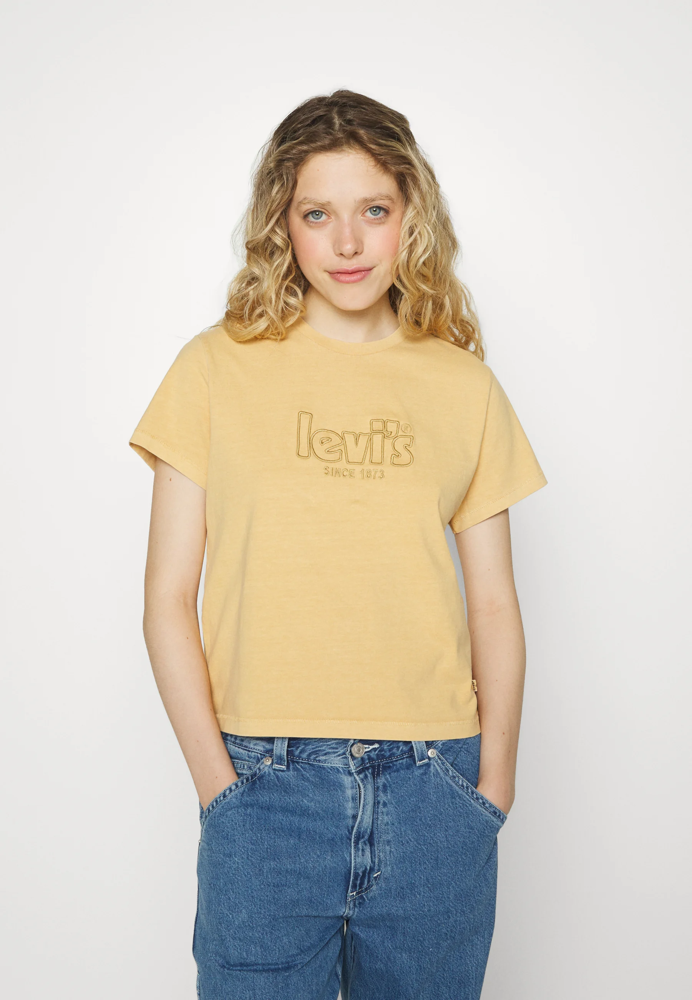
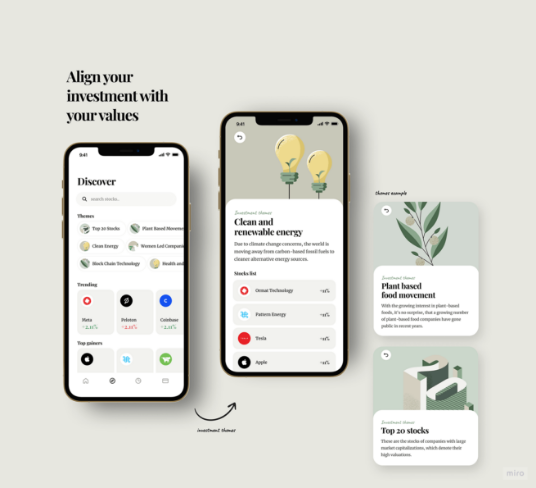
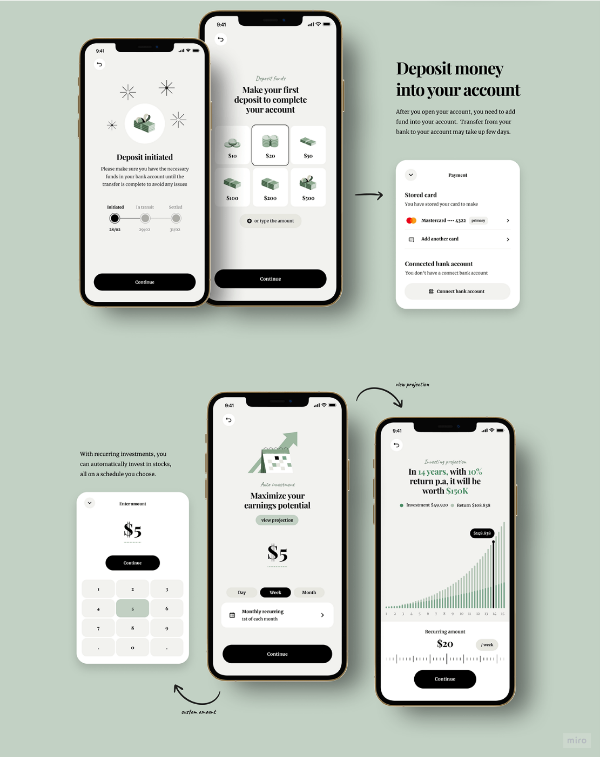
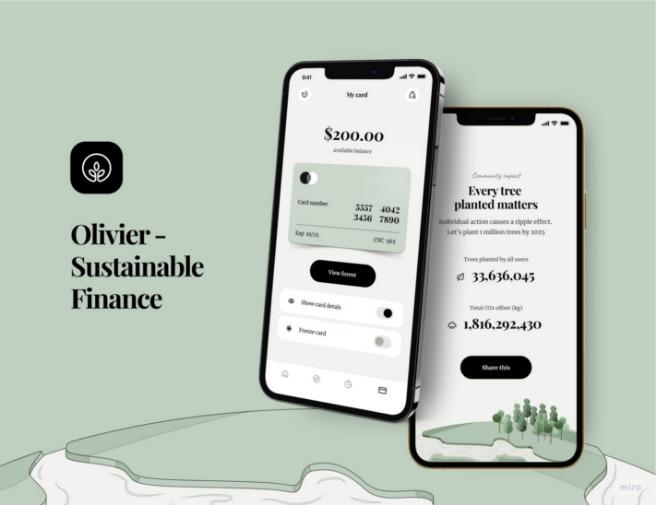
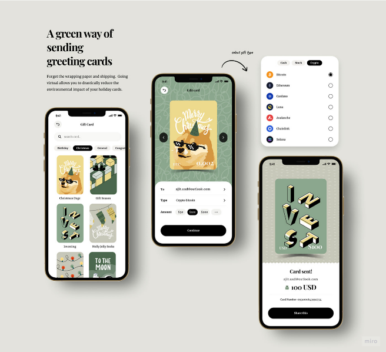

Mijn look
Hoe zien anderen mij?
Vriendelijk
Gedreven
Te
vertrouwen
Vastberaden
Casual
Comfortabel om in te werken
Niet slordig
Strak en modern
Zwart-wit
met accentkleur
Speelt in op duurzaamheid
Klant kan kiezen op welke manier die het klimaat wil helpen
Strak en modern




Leuke animaties
Kleuren zijn niet overheersend